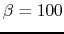

Next: About this document ...
E84 Home Work 11
- Assume in the circuit below (figure B), , ,
. Find the voltages and when
the base current is
. Sketch the
waveformes (over time) of the two voltages.
- Find values of
 and
and  in the circuit with
and so that the Q-point is and .
What is the Q point if
in the circuit with
and so that the Q-point is and .
What is the Q point if  ?
?

- Design a stable self-biasing transistor circuit as shown below
so that the DC operating point (Q point) of and
is in the middle of the load line for maximal dynamic range. Assume
the smallest
 value allowed is
. To reduce the
number of free parameters, we assume .
value allowed is
. To reduce the
number of free parameters, we assume .
Hint:
- For the DC operating point to be approximately independent of the
specific transistor used, we want
.
- Start the design process from the desired Q-point, determine ,
then find desired and finally and
 .
.
- Verify your design in previous problem by checking the DC operating
point of the resulting circuit is approximately the same as the requirement.
- In the circuit shown below, the two base resistors
,
the collector resistor is . Assume the two transistors
have the same value and they each receive an input (
 and
and
 ) at either or . Find the output voltage
) at either or . Find the output voltage  for
the following combinations of inputs. (Hint: input to a transistor
will drive it to saturation.)
for
the following combinations of inputs. (Hint: input to a transistor
will drive it to saturation.)

Next: About this document ...
Ruye Wang
2008-12-05